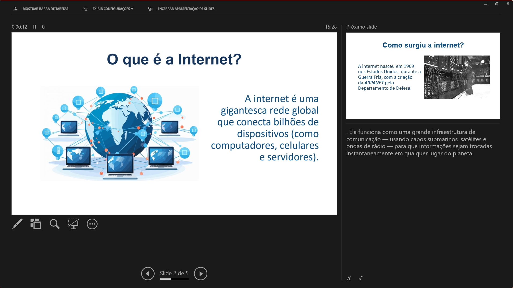

Criar slides é só metade do trabalho. A outra metade é saber apresentá-los — e o PowerPoint tem ferramentas que a maioria dos apresentadores nunca usou.
Depois de horas construindo cada slide, chega o momento que importa: a apresentação ao vivo. O modo de apresentação exibe o conteúdo em tela cheia, com animações, transições e mídias funcionando de forma integrada.
Para iniciar, pressione F5 para começar do início ou Shift + F5 para iniciar a partir do slide atual. Simples assim.
Durante a apresentação, o teclado vira um controle remoto poderoso:
| Ação | Comando |
|---|---|
| Avançar slide | Clique, Seta direita ou Enter |
| Voltar slide | Seta esquerda ou Backspace |
| Ir para um slide específico | Digite o número + Enter |
| Tela preta (pausa dramática) | Tecla B |
| Tela branca | Tecla W |
| Encerrar apresentação | Tecla Esc |
Curiosidade: A tecla B (de black) é um recurso clássico de apresentadores experientes. Quando você precisa de um momento de pausa — para fazer uma pergunta, gerar reflexão ou simplesmente redirecionar a atenção para você — apertar B apaga a tela e coloca o foco completamente no apresentador. É um truque simples com efeito poderoso.
Esse é o recurso que separa apresentadores iniciantes de apresentadores experientes. Com dois monitores ou um projetor conectado, o público vê apenas os slides enquanto o apresentador tem acesso a uma tela privada com muito mais informação.
Para ativar, acesse Apresentação de Slides → Usar Modo de Exibição do Apresentador.
Curiosidade: Mesmo com um único monitor, é possível usar o Modo de Exibição do Apresentador. O PowerPoint abre as duas janelas no mesmo monitor. Não é o ideal para uma apresentação real, mas é perfeito para ensaios — você pratica exatamente como vai ser no dia.

As notas do orador são um espaço de anotações privadas, vinculadas a cada slide individualmente. O público nunca as vê — elas existem exclusivamente para apoiar quem está apresentando.
Para adicionar notas, clique na área cinza abaixo do slide que exibe "Clique para adicionar notas" e comece a digitar. Para uma visão ampliada, acesse Exibir → Página de Anotações.
Curiosidade: Roteiros de fala completos nas notas podem virar uma armadilha. Quando o apresentador depende demais de ler o que está escrito, o contato visual com o público cai — e a apresentação perde vida. Os melhores usos das notas são tópicos-guia, dados complementares que não caberiam no slide e lembretes de ritmo.
As notas podem ser impressas como material de apoio pessoal. Para isso, acesse Arquivo → Imprimir e no campo Layout de Impressão selecione Páginas de Anotações. Cada folha imprime a miniatura do slide no topo e o texto das notas abaixo.
Dica: Se quiser distribuir material impresso para o público, use o layout Folhetos — com 2, 3 ou 6 slides por página — em vez das páginas de anotações. Assim suas notas ficam confidenciais e o público recebe apenas o que foi pensado para ele ver.
Apresentar com interatividade é muito mais envolvente do que apenas clicar nos slides. Durante a apresentação, o PowerPoint oferece ferramentas de marcação em tempo real:
Para acessar essas ferramentas, clique no ícone de caneta no canto inferior esquerdo durante a apresentação, ou clique com o botão direito e acesse Opções do Ponteiro.
Curiosidade: Ao encerrar a apresentação, o PowerPoint pergunta se você deseja manter ou descartar as anotações feitas com caneta ou marcador. Se você sublinhou um ponto importante durante uma discussão ao vivo, pode manter tudo registrado no arquivo para referência futura.
Ensaiar não é opcional — é o que transforma uma boa apresentação em uma apresentação memorável.
O recurso Ensaiar Intervalos (Apresentação de Slides → Ensaiar Intervalos) cronometra quanto tempo você passa em cada slide. No final, o PowerPoint mostra o tempo total e pergunta se deseja salvar os intervalos para que os slides avancem automaticamente durante a apresentação real.
Já o recurso Gravar Apresentação (Apresentação de Slides → Gravar Apresentação) registra sua narração em áudio e os movimentos do ponteiro, criando uma apresentação que funciona de forma completamente autônoma — ideal para enviar por e-mail, publicar em plataformas de ensino ou criar videoaulas.
Curiosidade: Apresentadores profissionais e palestrantes de TED Talks ensaiam em média entre 40 e 60 horas para uma apresentação de 18 minutos. Obviamente, isso é para o nível mais alto possível — mas a lógica vale: quanto mais você pratica, mais natural fica, e quanto mais natural fica, mais confiança você transmite.